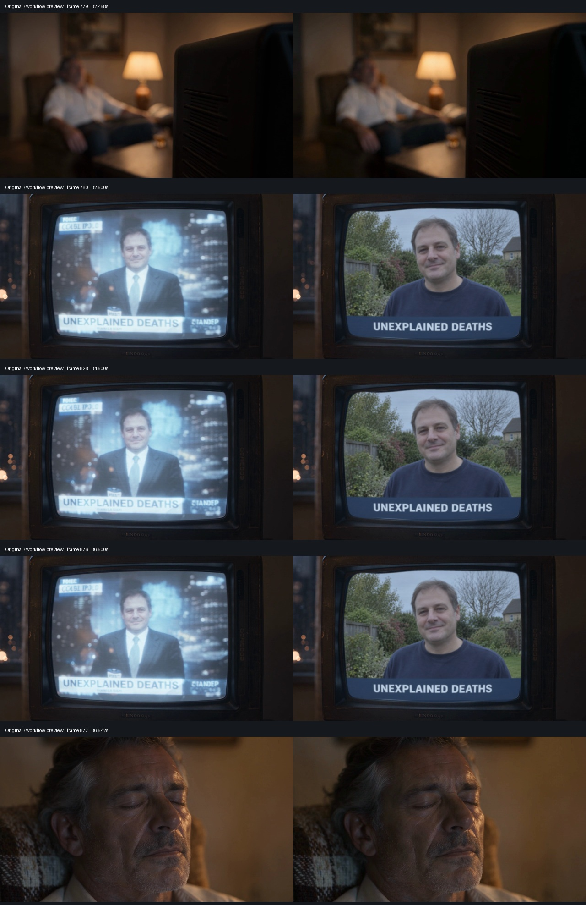
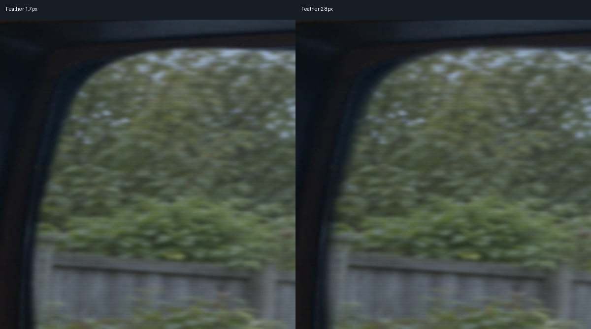

SELECTED WORK / SHANGHAI
AIGC 视频创作
与视觉工作流
我是 P. ÆVRYX，拥有 3 年 AI 工具使用经验，聚焦 AI 视频生成与制作、ComfyUI 工作流及 LoRA 实践。从创意、剧本分镜到审片与剪辑，结合生成结果持续迭代；现有 SOLVANE《静的形状》汽车品牌概念片、《Twenty-Four Frames》98 秒 MV 完整剪辑版，以及本地开源模型音乐短片《一圈》。
01 / AI VIDEO PRODUCTION
AI 视频生成与制作
从汽车品牌概念片到音乐影像，围绕具体画面目标调用模型，与 Agent 协作完成镜头生成、素材筛选、剪辑和后期。
LOCAL VIDEO PRODUCTION
《一圈》One Lap
一个女孩从黎明跑到下一个黎明，穿过一座城市。以光线、运动和音乐组织短片。
项目静帧 · 暂不提供视频播放2 分钟版 / 63 秒精剪版
全部画面在本地生成
全部图像及视频素材使用本地部署的开源模型生成，通过 ComfyUI 完成制作，未调用付费视频生成服务。配乐使用 Suno，另行制作与剪辑。
画面取舍
负责概念、视觉设计、分镜与全部创作决策。根据构图、光线、动作表现和角色一致性筛选素材，决定镜头保留、重做或调整方案；在画质与速度之间优先保留画面表现，放弃效果不理想的加速方案。
查看静帧与制作说明 →Twenty-Four Frames
以胶卷串起角色一天的经历，将线稿人物与胶片质感场景结合，以音乐组织镜头和情绪。
生成与制作
我负责创意、角色视觉设定、分镜、素材筛选与审片；与 Agent 协作确定曲风和歌词方向，使用 Suno 生成、筛选歌曲，结合 Nano Banana Pro、Wan 3.0 和 Kling 生成画面，完成剪辑与后期。
按镜头保存参考、提示词、生成素材、费用和修改版本；与 Agent 协作修正合成白边及人物颜色漂移，复查镜头衔接与画面表现。
网页播放 720 × 1280 / 30fps 分享版；1080 × 1920 母版保留。49 个剪辑镜头，非 49 条独立生成视频。个人创作，音乐及制作包含 AI / Agent 协作。
查看 MV 与制作说明 →
15 秒剪辑预览 · 原片 30 秒汽车品牌概念片 · 虚构品牌
SOLVANE 索澜《静的形状》
让安静被看见：声波线随城市噪声跳动，勾勒天际线，在静音中归于平直，最终化为贯穿式车灯。
创意与表达
围绕“让安静被看见”构思 30 秒品牌片，以音轨驱动的声波线串联城市噪声、陆家嘴天际线、静音与贯穿式车灯，完成“安静，有了形状”的视觉表达及中英双语文案。
声音、合成与 Agent 协作
与 Agent 协作使用 Python、FFmpeg 完成声波图形、画面合成及声音剪辑；根据审片结果调整音乐收尾、去除车内人物，并重剪 15 秒版以突出产品。
个人概念广告，品牌与车型为虚构设定，未实际投放。此处展示现有 15 秒剪辑版的轻量预览；30 秒完整版及更详细的制作材料可按需提供。
观看广告与制作说明 →02 / NARRATIVE OPENING
《雨停之前》
以雨夜室内的叙事开场为实践，串联参考设计、生成筛选、电视画面合成与音频接缝处理。
叙事开场 · 20 秒预览Blender 预演 / AI 生成 / 本地后期个人项目 · AI 辅助
现有开场版本 · 1280 × 720 · 24fps
43 秒开场片段，声音自然度等细节仍可改进。
我在其中做了什么
提出故事与镜头目标，整理视觉参考和生成要求，筛选现有片段；围绕电视画面与声音接缝提出修改目标，并与 AI 助手协作整理后期脚本、参数配置与验证记录。
Blender 场景、脚本与流程含 AI 辅助；作品为现有片段，本页仅截取预览，原版完整视频保留。
这份材料可以看什么
- 生成素材如何进入合成与后期处理。
- 同一素材下的参数修改、局部对照和输出复核。
- 输入保护、阶段缓存与缺失产物恢复的历史记录。
查看流程与验证说明 →展开：电视画面修改与参数对照

已有关键帧对照：左为原片，右为电视画面替换后的输出；用于检查替换范围、文字与电视外壳。
同一镜头的边缘羽化 1.7 / 2.8px 对照。用于展示参数修改与局部复查，不等于审美优劣结论。03 / COMFYUI & LORA
模型调用与 ComfyUI 工作流实践
围绕具体任务选择模型、搭建生成流程，检查模型依赖与节点兼容，并结合输出结果定位问题、调整参数。
模型调用任务选型与依赖配置
流程搭建节点连接与参数设置
问题排查兼容性与画面偏差
结果复核输出比较与版本记录
模型选择、流程搭建与调试
按任务选择和调用模型，在 ComfyUI 中搭建文生图、图生图及 LoRA 测试链路，配置基模、VAE、采样与输出参数；结合阶段结果排查依赖、节点兼容及画面偏差，迭代提示词与模型强度。下方以角色 LoRA 项目的现有配置展示具体做法。
本人参与概念与数据整理、参数取舍和结果审阅；配置、检查及文档含 AI 辅助。角色、图源与基础模型来自第三方。
公开材料与私下材料
这里可查看角色 LoRA 案例的 JSON 配置、节点结构及复核说明。训练图、模型权重与生成样图保留在私下审阅包中，按需提供。
历史样图缺完整逐图执行快照。现有比较是参数探索，不作为通用最优参数或统计评测结论。
模型调用与工作流调试过程
01 / LOAD模型选择与加载按任务核对基模、VAE 与 LoRA
02 / BUILD节点连接与任务配置设置提示词、画幅与采样参数
03 / DEBUG分阶段检查与调整排查依赖、节点兼容与画面偏差
04 / REVIEW结果对比与版本记录调整输入与参数，复核输出
下方 JSON 以角色 LoRA 测试为例展示节点连接与参数配置，为现有文件阅读副本，不附权重或基础模型；本次未重新运行推理。
查看依赖、参数与评估边界 →
04 / PRODUCTION PRACTICE
把生成过程整理清楚
记录尝试、定位问题，再把修改与复查连起来。以下均来自已有项目与处理记录。
3D 驱动 AI 动作
已有 13 秒动作视频实践，将 Blender 动作驱动、首帧风格与 AI 视频生成连接起来；围绕发饰干扰进行版本比较、审片与取舍。
本人负责需求、风格与成片选择、审片和迭代决策，管线代码含 AI 辅助。使用第三方角色、动作与编舞素材，视频仅供私下审阅。
查看贡献与材料说明 →AI 辅助脚本与流程验证
拆解与小样把目标拆成具体输入、输出和检查点。
脚本与配置使用 Claude Code、Codex 等工具协作调试，整理运行步骤与错误记录。
修改与复核保留原文件，比较参数与结果，核对产物和依赖。
归档与交接整理 README、结果清单、历史版本与可用范围。
MATERIALS / START HERE
作品与材料入口
先看视频，再读方法；更完整的结果与过程材料可结合岗位私下提供。
| 材料 | 现在可查看 | 入口 |
|---|
| 《一圈》One Lap | 项目静帧、本地生成与画面取舍说明 | 查看项目 / 读说明 |
| Twenty-Four Frames | 20 秒 MV 预览、模型与 Agent 协作说明 | 观看 MV / 读说明 |
| SOLVANE 索澜《静的形状》 | 15 秒剪辑预览 · 原片 30 秒 | 观看广告 / 读说明 |
| 《雨停之前》 | 20 秒开场预览、电视修改对照、流程验证说明 | 观看片段 / 读说明 |
| ComfyUI／LoRA | 模型调用与流程搭建说明、JSON 配置示例 | 查看工作流 |
| 3D 驱动 AI 动作 | 流程与贡献说明；视频私下提供 | 读说明 |
| AI 应用项目 | 公开 Text-to-SQL Agent 代码仓库 | GitHub ↗ |